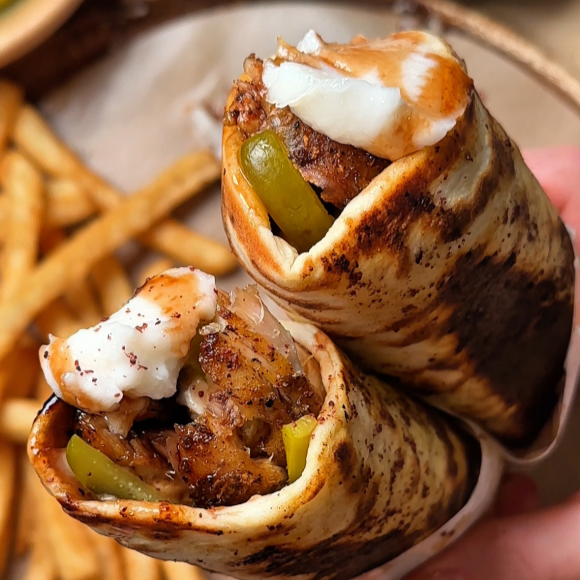

Shawarma
Shawarma is one of the Middle East’s most beloved street foods, known for its tender, flavorful meat and irresistible aroma. Traditionally, marinated chicken, beef, or lamb is stacked on a vertical rotating spit and slowly roasted until juicy inside and beautifully browned outside. Thin slices of meat are served in warm pita or flatbread with garlic sauce, tahini, pickles, fresh vegetables, and sometimes crispy fries. Every bite combines savory spices, tangy sauces, and satisfying textures.
History
Shawarma has its roots in the Ottoman Empire, where vertical spit-roasting techniques became popular during the 19th century. The name comes from the Turkish word çevirme, meaning “turning,” referring to the rotating spit used to cook the meat. The technique spread throughout the Middle East, inspiring regional variations across Lebanon, Syria, Turkey, and beyond. In Lebanon, chicken shawarma is especially popular with garlic sauce and pickled cucumbers, while beef or lamb shawarma is often served with tahini sauce. Today, shawarma is enjoyed worldwide as a beloved street food and a symbol of the region’s rich culinary heritage.
